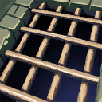
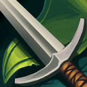
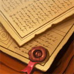

<div class="panel panel-default button-panel">
    <div class="panel-heading">
        
        

        <h3 class="panel-title">Witchhunter's guild
            <small>(Shop)</small>
        </h3>
    </div>
    <div class="panel-body">
        <div class="row">
            <div class="col-xs-12">
                <div class="row">
                    <div class="col-xs-4 big-button" ui-sref="witchhunters-guild-main">
                        
                        
                        <span class="big-button-text">Guild hall</span>
                    </div>
                    <div class="col-xs-4 big-button" ui-sref="witchhunters-guild-job">
                        
                        
                        <span class="big-button-text">Quests</span>
                    </div>
                    <div class="col-xs-4 big-button" ui-sref="witchhunters-guild-shop">
                        
                        
                        <span class="big-button-text">Shop</span>
                    </div>
                </div>
            </div>
        </div>
        <div class="row">
            <div class="col-md-12 col-lg-12">
                <h3 class="text-center">Shop</h3>

                <div class="description-holder" style="margin-bottom: 10px;" hm-read-more hm-limit="300"
                     hm-text="You approach one of the many shops in the hall. This one in particular is the most reliable, as it is commissioned directly by the guild itself. A handy Gnome lad is the first to greet you. He hopped up from a stool to the counter and leaned against the nearest shelf of items. You and him are utterly and completely surrounded by shelves of nothing but various, often magical goods. Sensational scrolls of both forbidden knowledge and wizardry, tattered books and some freshly bound in what may be mortal flesh, silver items for both protection and assassination, an intense and varied allotment of potions with numerous labels in several languages and weapons that had a supernatural glow or silver filled runic symbol. You lean over the counter to see that the little Gnome has an assortment of miniature staircases that reach to every level of all the shelves that box this mini-world of knowledge and items in. &quot;Hey, you - yeah you, daft one. You see that guy? Nolix over there? The one with the stupid hat?&quot; You shrug and look over your shoulder, indeed - Nolix is nearby, bartering his life away for what looked to be some enchanted coins at another vendor. &quot;Do me a favour and tell him to come by sometime and pick up his bombs.&quot; The Gnome kicked a small, velvet bag. A few small red bombs rolled out - which revealed their unique paint job and thick fuses.<br><br>&quot;The name is Nebuchadnectar. Some people just call me Chad for short, but if you call me that I will build a stairway to your ass so I can kick it!&quot; Nebuchadnectar stated with a firm fist, which he shook at you. You did not know whether to feel intimidated or bemused by the small Gnomish man. His clean shaven faced and amusing get up made him stand out from typical Gnomes. Surely, he was one that had lived among other species more than his own. His attitude was that of an angry, drunken dwarf and his skin had the complexion of an Ork alchemist. &quot;Piss off with any of your funny nicknames I know you are making in your head! I got work to do, you understand? You see this entire place around us? It is a big place, constantly moving, moaning, crying and finding something to be worried about. You got paranoia up to everyone's ear-hairs and you want to stand there with a flabber gasted look on your face?&quot; Nebuchadnectar presented to you his wares. Above his shop was a motto in Runes, carved deep into the wood. 'Choose Wisely (Or Not At All)'."></div>
            </div>
        </div>
    </div>
</div>